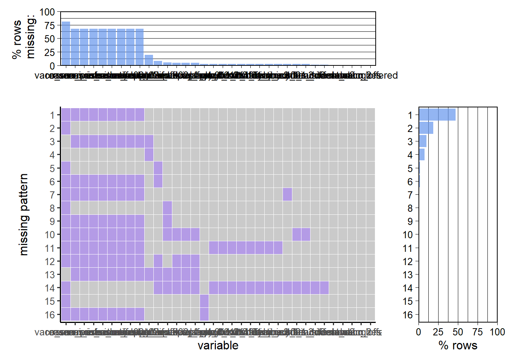

Chapter 4 Missing values
has missing value or not for each dataset
LA missing Value Check if the dataset has missing value LA has 619 missing values
## [1] 619## NOTE: The following pairs of variables appear to have the same missingness pattern.
## Please verify whether they are in fact logically distinct variables.
## [,1] [,2]
## [1,] "phq4_dum" "phq4_sum"
## [2,] "phq4_dum" "wb011_binary"
## [3,] "phq4_dum" "wb012_binary"
## [4,] "phq4_dum" "wb014_binary"
## [5,] "phq4_dum" "wb015_binary"
## [6,] "phq4_dum" "fear_bin2"
## [7,] "phq4_dum" "fear_sum2"
## [8,] "phq4_sum" "wb011_binary"
## [9,] "phq4_sum" "wb012_binary"
## [10,] "phq4_sum" "wb014_binary"
## [11,] "phq4_sum" "wb015_binary"
## [12,] "phq4_sum" "fear_bin2"
## [13,] "phq4_sum" "fear_sum2"
## [14,] "wb011_binary" "wb012_binary"
## [15,] "wb011_binary" "wb014_binary"
## [16,] "wb011_binary" "wb015_binary"
## [17,] "wb011_binary" "fear_bin2"
## [18,] "wb011_binary" "fear_sum2"
## [19,] "wb012_binary" "wb014_binary"
## [20,] "wb012_binary" "wb015_binary"
## [21,] "wb012_binary" "fear_bin2"
## [22,] "wb012_binary" "fear_sum2"
## [23,] "wb014_binary" "wb015_binary"
## [24,] "wb014_binary" "fear_bin2"
## [25,] "wb014_binary" "fear_sum2"
## [26,] "wb015_binary" "fear_bin2"
## [27,] "wb015_binary" "fear_sum2"
## [28,] "fear_bin2" "fear_sum2"
## [29,] "handwash" "sd01_sixfeet_dum"
## [30,] "sd_bin3" "sd_sum3"
## [31,] "at02_official_any" "at02__newspapersradioortv"
## [32,] "at02_official_any" "at02_ff_any"
## [33,] "at02__newspapersradioortv" "at02_ff_any"
Vaccination by Race Missing value 